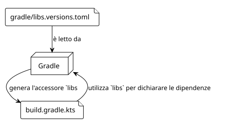
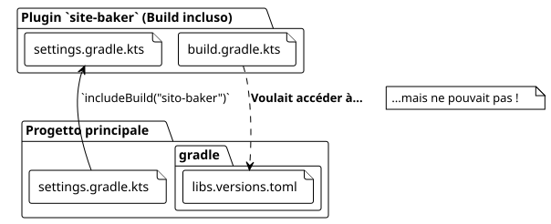

Articolo 5 : L'avventura del libs.versions.toml condiviso
Publié le 27 September 2025
Introduzione
Nella nostra ricerca per creare il plugin`site-baker`, abbiamo cercato di mantenere una base di codice pulita e centralizzata. Una delle migliori pratiche nell’ecosistema Gradle moderno è l’utilizzo delcatalogo di versioni(libs.versions.toml) per gestire le dipendenze. Ma cosa succede quando il tuo progetto diventa più complesso, come uncostruire compositodove una build indipendente (il nostro plug‑in) deve essere inclusa in un’altra ?
È lì che la nostra avventura ha preso una svolta inaspettata. Volevamo che il nostro plugin`site-baker`, che è lui stesso un progetto Gradle, utilizza lo stesso catalogo di versioni del nostro progetto principale. Questo articolo, il quinto della nostra serie, racconta come abbiamo risolto questa sfida.
1. Il Catalogo delle Versioni (libs.versions.toml) : Un promemoria
Il file`gradle/libs.versions.toml`è una funzionalità di Gradle che permette di centralizzare le versioni e le coordinate delle dipendenze del tuo progetto. È generalmente strutturato in quattro sezioni:
-
[versions]: Definisce degli alias per i numeri di versione (es:`kotlin = "1.9.20"`). -
[libraries]`Definisce alias per le dipendenze complete, utilizzando le versioni definite sopra (ex:`kotlin-stdlib = { module = "org.jetbrains.kotlin:kotlin-stdlib", version.ref = "kotlin" }). -
[bundles]: Raggruppa più librerie sotto un unico alias (es:`jackson = ["jackson-core", "jackson-databind"]`). -
[plugins]: Definisce alias per i plugin Gradle.
Una volta definito, Gradle genera automaticamente dei metodi di accesso tipizzati, il che rende il tuo`build.gradle.kts`molto più leggibile :
dependencies {
// Au lieu de : implementation("org.jetbrains.kotlin:kotlin-stdlib:1.9.20")
implementation(libs.kotlin.stdlib)
}
2. Il problema: una build composta e due mondi separati
La nostra struttura di progetto è uncostruire composito. Il progetto principale (thymeleaf.cheroliv.com) include il progetto del progetto (site-baker) tramite il comando`includeBuild("site-baker")nel file`settings.gradle.kts.

Il problema è che, di default, un build incluso è unmondo separato. Ha la sua configurazione personale, il suo ciclo di vita personale, e non vede il file`libs.versions.toml`del build principale. Nostro`plugin/build.gradle.kts`stava tentando di usare`libs.plugins.kotlin.jvm`, ma l’oggetto`libs`non è stato generato dal file TOML corretto, provocando errori di build.
3. La Soluzione : Condividere la Risoluzione delle Dipendenze
Dopo diverse ricerche, la soluzione si è rivelata essere una funzionalità di Gradle progettata appositamente per questo caso :`dependencyResolutionManagement`.
Nel file`settings.gradle.kts` du costruire inclusivo(site-baker/settings.gradle.kts), possiamo dire a Gradle dove trovare il catalogo delle versioni da utilizzare.
Ecco la configurazione che abbiamo aggiunto a`site-baker/settings.gradle.kts`[Nothing to output]
// site-baker/settings.gradle.kts
dependencyResolutionManagement {
repositoriesMode.set(RepositoriesMode.FAIL_ON_PROJECT_REPOS)
repositories {
gradlePluginPortal()
mavenCentral()
}
versionCatalogs {
create("libs") {
from(files("../gradle/libs.versions.toml"))
}
}
}
rootProject.name = "site-baker"
include("plugin")Analizziamo la parte cruciale :
versionCatalogs {
create("libs") { // Crée un catalogue nommé 'libs'
from(files("../gradle/libs.versions.toml")) // En utilisant ce fichier
}
}-
create("libs"): Dichiaro un catalogo di versioni che sarà accessibile tramite l’alias`libs`. -
from(files("../gradle/libs.versions.toml"))`È la magia. Indichiamo a Gradle che l’origine di questo catalogo è il file TOML situato nella directory`gradledu progetto padre(../).
Con questa configurazione, il build`site-baker`sa adesso che deve utilizzare il catalogo delle versioni del progetto principale. L’oggetto`libs`viene generato correttamente, e le dipendenze sono risolte come previsto.
4. Conclusione : La Potenza dei Builds Composti Ben Gestiti
Questa esperienza è stata ricca di insegnamenti. Il catalogo di versioni è uno strumento fantastico per la manutenibilità, ma il suo comportamento in scenari di build composite non è sempre intuitivo.
La chiave è ricordare che una build inclusa rimane una build indipendente. Per condividere configurazioni come il catalogo di versioni, è necessario utilizzare i meccanismi espliciti forniti da Gradle, come il bloc`dependencyResolutionManagement`in`settings.gradle.kts`.
Risolvendo questo problema, non solo abbiamo reso il nostro build più pulito, ma abbiamo anche rafforzato la coerenza del nostro progetto assicurandoci che il plugin e il progetto principale condividano un’unica fonte di verità per le loro dipendenze.
Nel prossimo articolo, continueremo ad arricchire il nostro plugin aggiungendovi attività più complesse, ora che la nostra gestione delle dipendenze è solida e centralizzata.
Articoli correlati
14 May 2026